Tall · slender · fluid
Primary sizes, light & construction ↗Covan Labs / Responsive identity
Retained references. Continue to H1–H3 hybrid refinement, founded on 01 Elegant Flow.
Three distinct interpretations of Confluence C.
Judge the silhouette at 256, 128 and 64px, then in the navbar.

Tall · slender · fluid
Primary sizes, light & construction ↗
Structured · firm · precise
Primary sizes, light & construction ↗


Asymmetric · full · natural
Primary sizes, light & construction ↗The primary mark carries the full character. Once one direction is selected, a separate Micro C will be derived for 16–24px. It may simplify the opening and confluence, adjust contrast or use monochrome.
Small reductions are available only as secondary references on each detail page. They do not determine the master geometry.